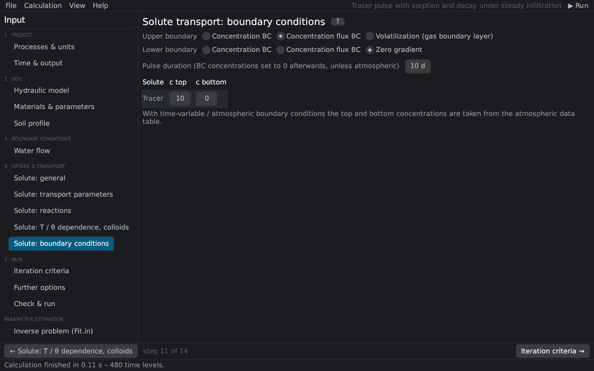

Input (pre-processing) › Solute transport
Solute transport: boundary conditions
The page corresponds to the Solute Transport Boundary Conditions dialog of HYDRUS-1D. The equations are in solute transport.


Upper boundary
| Condition | Description |
|---|---|
| Concentration BC | first type: the concentration of the top node is prescribed |
| Concentration flux BC | third type: the solute flux equals the water flux times the concentration of the entering water; recommended for the soil surface (no solute enters with evaporation) |
| Volatilization | concentration flux plus gas diffusion through a stagnant boundary layer of thickness dSurf to the atmosphere with the concentration cAtm Jury et al. (1983) |
Lower boundary
| Condition | Description |
|---|---|
| Concentration BC | first type |
| Concentration flux BC | third type |
| Zero gradient | ∂c/∂z = 0: solute leaves the profile by advection only (deep profiles, free drainage) |
Concentrations
c top and c bottom per solute [M/L³]; with time-variable or atmospheric boundary conditions the concentrations come from the cTop and cBot columns of the time-variable data. Pulse duration: after this time [T] the boundary concentrations are set to 0 – only without an atmospheric boundary condition.
Literature cited in this topic
- Jury, W. A., W. F. Spencer, and W. J. Farmer (1983). Behavior assessment model for trace organics in soil: I. Model description. Journal of Environmental Quality 12(4): 558–564. doi:10.2134/jeq1983.00472425001200040025x
All sources: References.